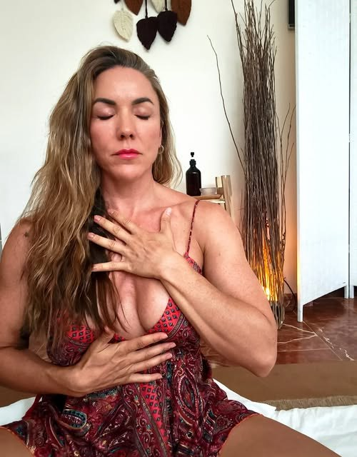
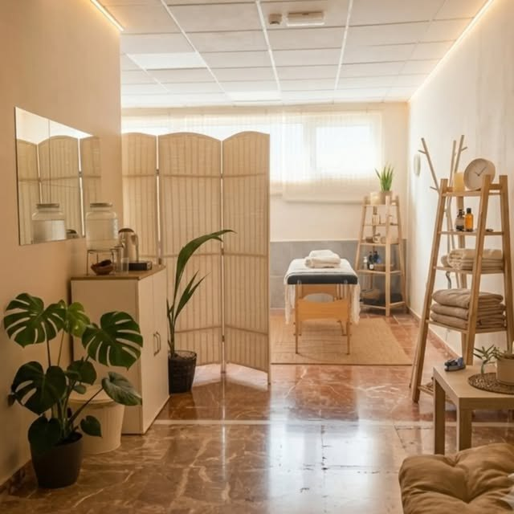
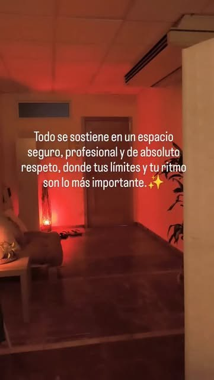

Masaje tántrico profundo
El masaje tántrico tradicional: contacto suave, respiración y escucha profunda para que el cuerpo se sienta seguro y suelte lo que llevaba sosteniendo en silencio.
Duración y precioA confirmar
Málaga · con cita previa
«Hay lugares a los que vas a desconectar… y espacios a los que vienes a reconectar.»Dámaris Toro
¿Prefieres escribir antes? Mándame un mensaje por Instagram

83,9 mil personas siguen su trabajo en Instagram
Ver su InstagramEl arte del tacto
Es un templo de presencia sostenida, un espacio sagrado donde la energía se mueve, la mente se calma y el cuerpo vuelve a recordar su propia sabiduría.
Aquí no hay prisa, no hay juicios. Solo un espacio seguro para sentirte, habitarte y volver a ti a través del tacto consciente.
«No soy una flor de jardín para ser decorativa; soy la raíz salvaje que rompe el asfalto.»
Dámaris
Sesiones
Un espacio donde el tiempo se detiene y las prisas se desvanecen. Donde no hay metas que alcanzar, ni expectativas que cumplir, ni nada que demostrar.
El masaje tántrico tradicional: contacto suave, respiración y escucha profunda para que el cuerpo se sienta seguro y suelte lo que llevaba sosteniendo en silencio.

Acompañamiento para reconectar con tu cuerpo y tu sexualidad desde un lugar de amor y presencia, a tu ritmo.

Días fuera de la sala para parar, respirar y compartir. Las próximas fechas las anuncio en Instagram.
¿Hace cuánto no te regalas un momento de presencia absoluta? Escríbeme y te cuento qué sesión encaja mejor contigo.
Cómo es una sesión

Un rincón de paz te espera
El espacio
Date el descanso que te mereces.


Lo que comparto cada semana con más de 83 mil personas. Sígueme en @superdama79.
Desliza para ver más. Toca un vídeo para verlo completo.
En sus palabras
Hay una diferencia entre estar cansado y llevar meses sin escucharte. Tu cuerpo lo sabe y te lo dice en los hombros que nunca bajan.
El cuerpo dice lo que la mente calla. Una presión, un nudo, esa sensación de no soltar del todo.
Con el pecho abierto recibo lo que llega, suelto lo que pesa y abrazo la incertidumbre del camino.
Preguntas frecuentes
Es un masaje de cuerpo completo que nace de la tradición del Tantra. Se apoya en el tacto consciente, la respiración y la presencia. No persigue ninguna meta: busca que el cuerpo se sienta seguro para soltar lo que lleva tiempo sosteniendo y volver a ti.
Sí. Todo se sostiene en un espacio seguro, profesional y de absoluto respeto, donde tus límites y tu ritmo son lo más importante.
Claro. No hace falta experiencia ni hay nada que demostrar. Antes de empezar hablamos de lo que buscas y de tus límites.
En Málaga. La dirección exacta te la paso al confirmar la cita.
Por WhatsApp al 672 07 60 34 o con un mensaje privado en Instagram (@superdama79). Las sesiones son siempre con cita previa.
Reservar
Si sientes la necesidad de reconectar contigo desde un lugar de amor y presencia, escríbeme.